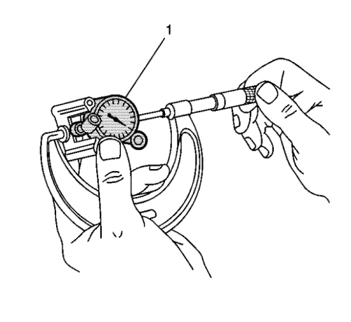

Esmerilado del cilindro — LE5
Herramientas especiales
EN-8087 Micrómetro de diámetros de cilindro
Si desea informarse sobre herramientas regionales equivalentes, consultar Herramientas especiales .

- Mida si el diámetro interior del cilindro presenta conicidad o excentricidad.
- Mida la dimensión (1) a 13 mm (½ pulg.) por debajo de la superficie de la junta de culata. Mida la dimensión (2) a 100 mm (4 pulg.) por debajo de la superficie de la junta de culata.

- Para medir los orificios de cilindros, ponga a cero el cuadrante de la galga EN-8087 (1) en el cilindro, en el punto de medición deseado. Bloquee el indicador a cero antes de quitar el cuadrante del cilindro. Mida a través de los puntos de contacto de la herramienta con un micrómetro de exteriores, con la herramienta a cero como cuando se quitó del cilindro.
- Los arañazos verticales finos hechos por los extremos de los segmentos no causan, por si mismos, un exceso de consumo de combustible. No rectifique el cilindro para eliminar dichos arañazos.
- Si el diámetro interior presenta un aspecto vidrioso pero se puede reparar, rompa ligeramente la capa vidriosa con un bruñidor. Sustituya los segmentos de pistón. Consultar Montaje de pistón, biela y cojinete : LAF, LAT, LE5, LE9 .
| 5.1. | Las piedras de bruñir deben estar limpias, afiladas y rectas. |
| 5.2. | Suba y baje el bruñidor lentamente para producir un patrón en cruz de 45 grados. |
| 5.3. | Limpie el diámetro interior a fondo con jabón y agua. |
| 5.4. | Seque el diámetro interior. |
| 5.5. | Frote para limpiar el aceite del motor en el diámetro interior. |
| 5.6. | Vuelva a medir el orificio. |
- Si el calibre del cilindro no cumple las especificaciones, monte un nuevo casquillo del calibre del cilindro. Consultar Desmontaje del casquillo del cilindro : LE5, LE9 y Montaje del casquillo del cilindro : LE5, LE9 .
- Si no hace falta rectificar, limpie los diámetros interiores de los cilindros con agua caliente y detergente. Ponga aceite de motor limpio en el diámetro interior después de lavarlo y secarlo.
| © Copyright Chevrolet Europe. All rights reserved |